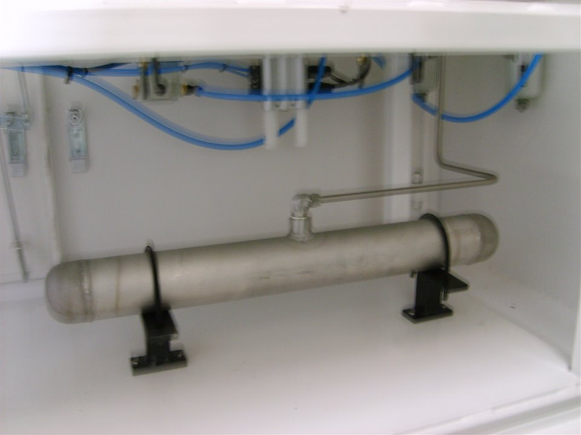
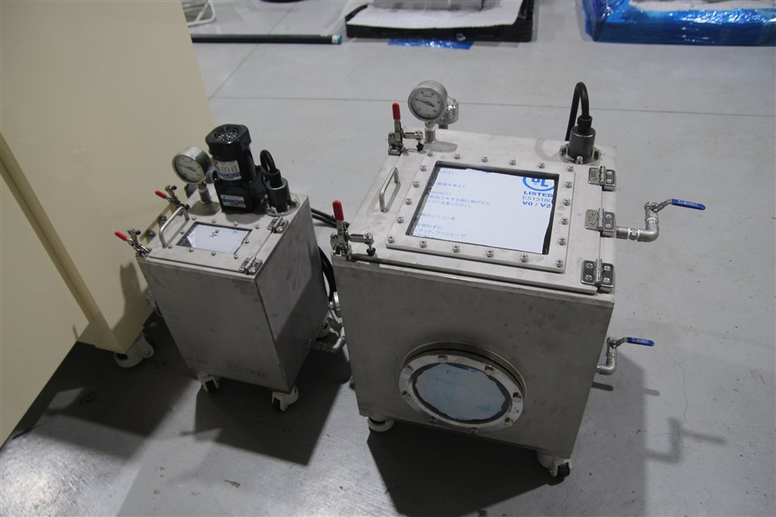
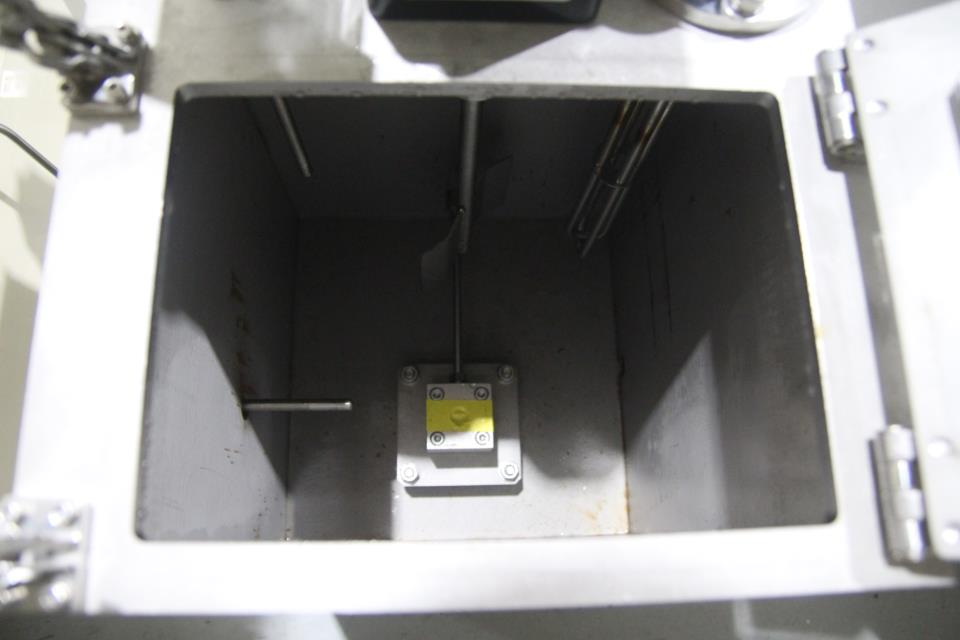

BUFFER TANK
고압버퍼탱크
용도
압력원과 사용처 사이에서 매체를 일시 저장하여 간헐적인 사용에 따른 공급 변동을 줄이는 용기입니다. 필요한 용적은 사용량과 허용 압력 범위에 따라 달라집니다.

사양 선정 및 기록 항목
- 사용 조건
- 사용 매체, 운전 온도, 필요 용적, 설계·운전압력
- 설치 조건
- 연결 규격, 설치 공간, 장착 방향, 사용처의 유량과 사용 주기
- 확인 문서
- 탱크 명판, 승인 도면, 검사 및 유지관리 자료
운전 전 확인
탱크 명판과 승인 도면을 대조해 적용 매체와 온도·압력 범위를 확인합니다. 차단·과압 보호 및 점검 조건은 설치 문서를 따릅니다.
MANUAL PRESSURIZATION
수동가압설비
용도
작업자가 펌프를 직접 조작하는 가압 방식입니다. 수동 조작으로 필요한 압력과 매체량을 확보할 수 있는지는 시험체 용적과 펌프 사양을 함께 검토합니다.

사양 선정 및 기록 항목
- 시험 대상
- 시험체 용적, 연결 규격, 설치 및 작업 공간
- 선정 조건
- 사용 매체, 목표 압력, 펌프 토출량, 압력계 범위
- 확인 문서
- 장비 사양서, 회로도, 압력 해제 및 점검 절차
운전 전 확인
펌프와 호스, 피팅, 계측기의 허용압력 및 사용 매체 적합성을 확인합니다. 압력 해제와 연결 해제는 장비별 매뉴얼을 따릅니다.
PROOF TEST
내압시험설비
용도
용기, 밸브, 배관 및 연결부가 해당 시험 조건을 견디는지 확인할 때 사용합니다. 시험 결과는 적용 규격에서 요구하는 변형, 누설 등의 기준으로 평가합니다.

사양 선정 및 기록 항목
- 시험 대상
- 품목, 외형 치수, 내부 용적, 연결 규격
- 시험 조건
- 시험 매체, 시험압력, 유지시간, 허용 변형 및 누설 기준
- 기록 항목
- 시험체 식별번호, 압력·시간 이력, 시험 결과
운전 전 확인
적용 시험규격과 승인 절차서에서 가압·유지·감압 조건을 확인합니다. 시험 회로의 정격과 계측기 교정 상태를 확인합니다.
LEAK TEST
기밀시험설비
용도
밸브, 밀봉부 및 연결부의 밀폐성을 확인하는 설비입니다. 요구 감도와 검출 대상에 따라 압력강하법, 기포법 등 적용할 시험 방법을 정합니다.

사양 선정 및 기록 항목
- 시험 대상
- 시험체, 밀봉부 위치, 연결 방식
- 시험 조건
- 시험 가스, 시험압력, 안정화·측정시간, 허용 누설 기준
- 기록 항목
- 시험 방법, 온도, 측정값과 단위, 판정 결과
운전 전 확인
압력강하법을 적용하는 경우 온도 변화와 계측기 분해능이 결과에 미치는 영향을 검토합니다. 판정은 승인된 누설 기준을 따릅니다.
BURST TEST
파열시험 챔버
용도
시험체를 파손시켜 파열압력과 파손 위치를 평가하는 파괴시험용 설비입니다. 시편과 시험 조건이 달라지면 비교 기준도 달라질 수 있습니다.

사양 선정 및 기록 항목
- 시험 대상
- 시편 형상, 재질, 치수, 예상 파열압력
- 시험 조건
- 시험 매체, 적용 규격, 가압률, 시험 종료 조건
- 기록 항목
- 압력 이력, 파열압력, 파손 위치와 형상
운전 전 확인
승인된 시험계획에서 파편과 시험 매체의 비산을 고려한 차폐, 원격 조작, 출입 통제 및 시험 종료 후 접근 기준을 확인합니다.
STRUCTURAL ANALYSIS
안전 구조 계산 및 해석
검토 범위
압력시험설비의 챔버, 지지 프레임, 체결부에 작용하는 하중을 파악하고, 적용 기준에 따라 강도와 변형을 검토합니다.

검토에 필요한 자료
- 기본 자료
- 설비 도면, 재질, 시험체 형상, 시험압력 및 시험 매체
- 검토 조건
- 설치 및 지지 조건, 하중 조건, 적용 규격과 허용 기준
- 결과 항목
- 응력 및 변형 평가, 검토 가정과 적용 범위
CONTACT
설비 사양 및 제작 문의
필요한 설비명과 시험 대상, 목표 압력을 문자로 보내 주세요.